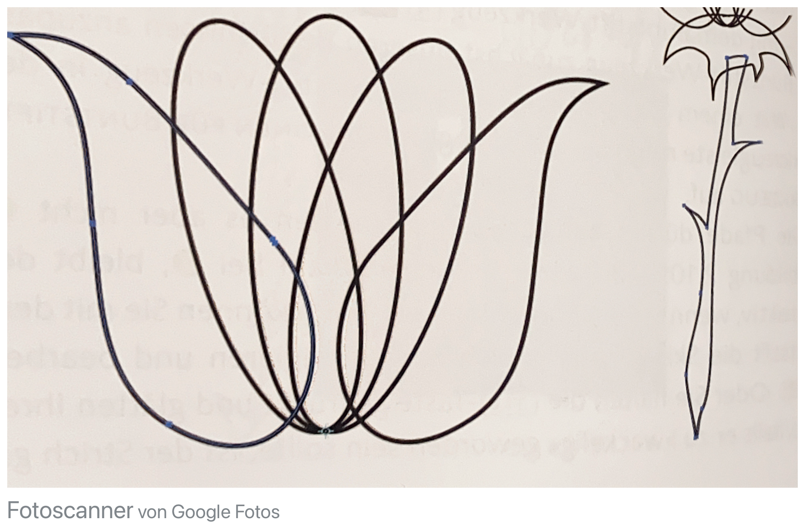
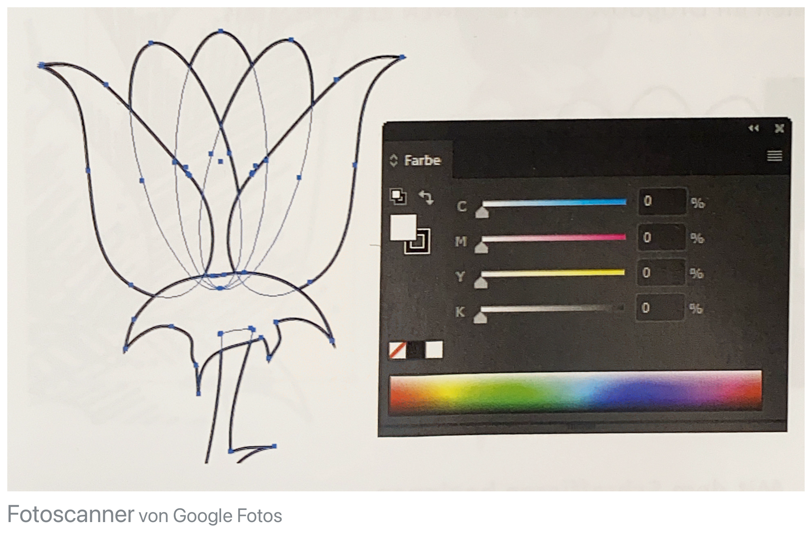
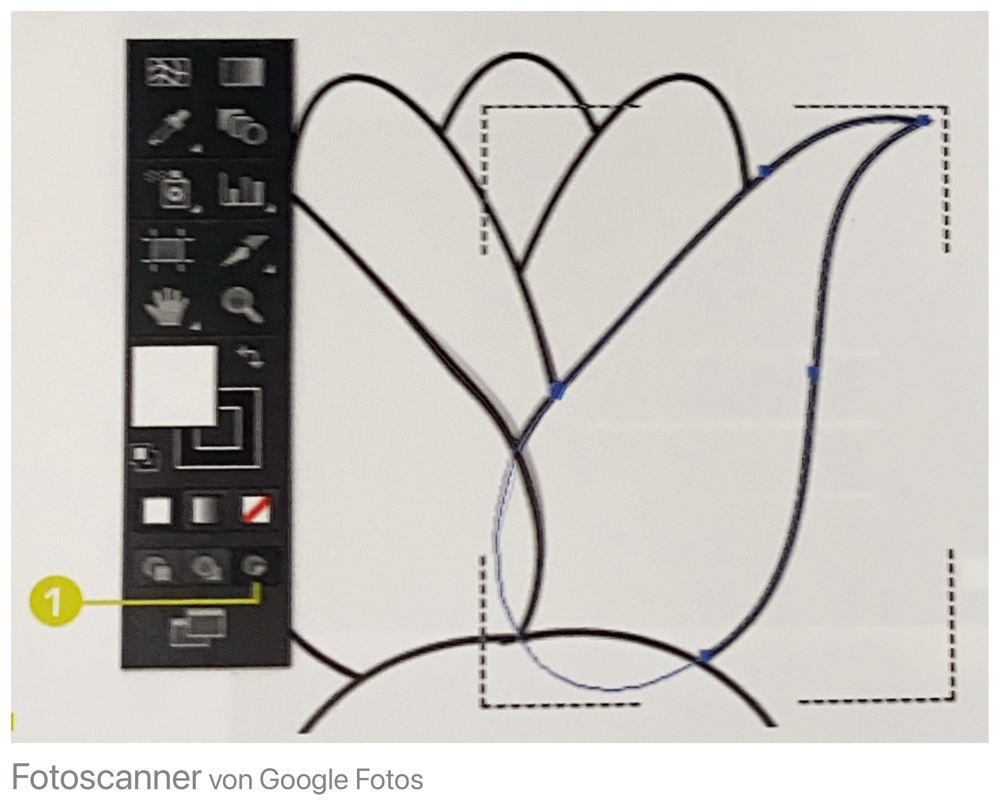
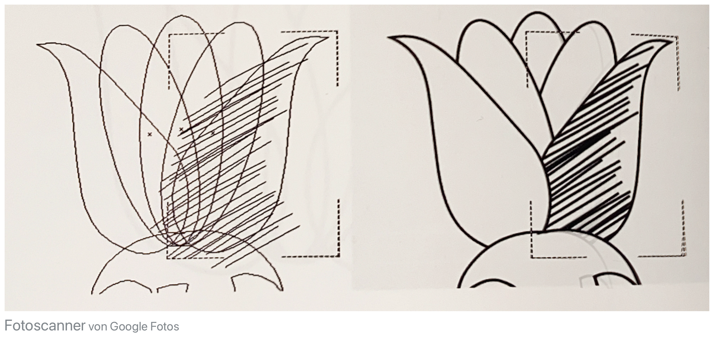

Eine einfache Bleistiftskizze kann Ihnen als Vorlage dienen.
Platzieren, fixieren und abblenden Sie die Skizze auf einer extra Ebene.
Die inneren Blütenblätter
Innere Blütenblätter zeichnen
Starten Sie mit dem Ellipse-Werkzueg und ziehen Sie eine senkrechte schmale
Ellipse auf, die das mittlere Blütenblatt darstellt.
Blütenblatt duplizieren und drehen
Das Blütenblatt duplizieren und drehen
Mit dem Drehen-Werkzeug einmal in den untersten Punkt klicken, um dort den Drehpunkt zu fixieren.
Mit gedrückter Alt-Taste zum Duplizieren drehen Sie nun das Blütenblatt nach rechts, indem Sie am oberen Ende
der Ellipse klicken und nach rechts ziehen (ohne die Maus zwischendurch loszulassen!). Nun das Gleiche andersheum für das linek Blütenblatt.
Buntstift-Werkzeug-Einstellungen
Buntstift-Werkzeug-Einstellungen
Als nächstes äußere Blütenblätter mit dem Buntstift-Werkzeug zeichnen. Mit einem Doppelklick auf das Werkzeug
in der Werkzeugleiste öffnen Sie eine Box OPTIONEN FÜR BUNTSTIFT-WERKZEUG, in der Sie das Werkzeug unseren Bedürfnissen anpassen kann.
Regler Richtung GLATT schieben
Pfade können gefüllt werden, müssen es aber nicht
Pfad bleibt aktiv, wenn Sie die Maus loslassen
Skizze mit Buntstift selbst gleich noch korrigierbar
Wenn SIe das nächste Objekt zeichnen, deaktivieren Sie das gerade aktive mit STRG/CMD + Sift + A.
Äußere Blütenblätter zeichnen

Äußere Blütenblätter zeichnen
Zeichnen Sie selbst die äußeren Blütenblätter.
Die Schraffuren vorbereiten

Die Schraffuren vorbereiten
Wenn Sie alles aktivieren und in dem Farbe-Bedienfelddie Flächenfarbe auf Weiß stellen, lenken Sie die Konturen der Blätter, an denen Sie gerade nicht arbeiten
nicht so ab.
Die Schraffuren vorbereiten
Für die Schraffuren verändern Sie die Werkzeugeinstellungen des Buntstifts.
Da wäre es hinderlich, die einzelnen Striche immer wieder zu deaktivieren, bevor Sie den
nächsten zeichnen.

Die Schraffuren vorbereiten
Stellen Sie AUSWAHL BEIBEHALTEN ab und erhöhen Sie die Glättung.
Deaktivieren Sie AUSGEWÄHLTE PFADE BEARBEITEN.
Aktivieren Sie das jeweilige Objekt, das Sie mit der Schraffur versehen wollen
und klicken Sie auf den Button INNEN ZEICHNEN.
Mit dem Schraffieren beginnen

Mit dem Schraffieren beginnen
Schraffieren Sie los. Sie dürfen die Linien auch über die Kontur hinausziehen.
Klicken Sie nach der Schraffur eines jeden Blattes immer wieder gleich auf den Button NORMAL ZEICHNEN.
Aktivieren Sie den Buttton INNEN ZEICHNEN dann für jedes weitere zu schraffierende Element erneut.
Schraffuren korrigieren
Schraffuren korrigieren
Einzelne Pfade oder Ankerpunkte nachträglich bearbeitbar durch Auswählen des Objektes mit dem
Direktauswahl-Werkzeug und dann im Steuerungs-Bedienfeld links den Button INHALTE BEARBEITEN wählen.
Dann könne Sie Korrekturen an einzelnen Punkten vornehmen.Umgekehrt bearbeutenn Sie über den Button
ZUSCHNEIDUNGSPFAD BEARBEITEN das Blatt als Ganzes.